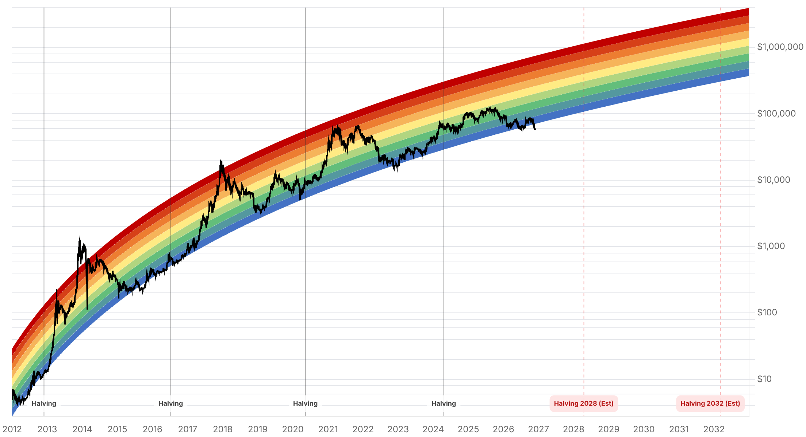

Reporte financiero
BTC cotiza en vivo a USD 59.549,21 (07:16 UTC), -0,53% frente al cierre previo de USD 59.866,07 -la serie semanal (22 al 28 de noviembre) confirma que el repunte reportado ayer se diluyó por completo-. Según CoinDesk, el 27-nov BTC llegó a subir 1,8% hasta ~USD 61.600, encaminado a cortar una racha de siete semanas bajistas consecutivas (la segunda más larga de su historia), pero esas ganancias del feriado de Thanksgiving (26-nov) resultaron efímeras y hoy el precio ya volvió a caer por debajo de los USD 60.000, revirtiendo esa recuperación semanal. Noviembre acumula una caída de ~20%, su peor mes desde junio. En flujos de ETFs, el 27-nov liquidó oficialmente en -USD 389,0M netos (fuente: cryptodataapi.com, cifra consistente con el -USD 453,1M del 25-nov ya confirmado ayer vía Farside) -el 26-nov no hubo rueda por el feriado de Thanksgiving en EE.UU.-, llevando el acumulado de noviembre a -USD 5.780,1M en 19 jornadas (17 negativas, 2 positivas), frente a los -USD 5.390M/18 jornadas de ayer: la racha de salidas continúa pero con una magnitud diaria menor que la del 25-nov. En derivados, ~USD 7.000M en opciones BTC vencieron en Deribit el 27-nov (08:00 UTC); las liquidaciones del día cayeron 61% a USD 242M (71% cortos; en BTC puntualmente USD 84,7M, 77% cortos) y el funding volvió a terreno neutral en Binance/OKX/Bybit -a diferencia del funding positivo que reportamos ayer-, señal de que el apalancamiento largo acumulado se desarmó tras el vencimiento en vez de sostener el rebote. Como novedad técnica, CoinDesk destacó en su portada del 27-nov un análisis sobre un posible 'death cross' formándose en BTC-USD (cruce bajista de la media móvil de 50 días por debajo de la de 200); no fue posible acceder al cuerpo del artículo para confirmar las cifras exactas de su comparación histórica, pero coberturas previas de esta misma señal (en cruces anteriores del ciclo) la describen como de historial mixto y generalmente rezagada, no como una señal de entrada por sí sola. El Fear & Greed Index cae a 10 hoy (vs. 12 ayer en nuestra fuente alternative.me), profundizando en 'Extreme Fear' -consistente con el índice propio de CMC que CoinDesk citó en 11 para el 27-nov-. No se pudo obtener hoy una lectura fresca de RSI/MACD de CoinLore (la página no devolvió contenido legible); no se reutiliza el dato de ayer como si fuera de hoy. Sin cambios verificables desde ayer en la tesis de short squeeze de Ki Young Ju (CryptoQuant) ni en Doctor Profit, Ali Martinez, Mark Yusko o Christopher Waller. La exclusión de Strategy del índice MSCI USA sigue efectiva al cierre del 30 de noviembre -en dos días-, sin novedades adicionales hoy.
CoinDesk reportó que BTC subía 1,8% hasta ~USD 61.600 el 27-nov, en camino a cortar una racha de siete semanas bajistas consecutivas (la segunda más larga de su historia) tras rebotar desde el mínimo de USD 57.500 del 25-nov. Sin embargo, esas ganancias asociadas al feriado de Thanksgiving (26-nov, cuando BTC se mantuvo prácticamente plano cerca de USD 60.800) resultaron efímeras: hoy, en vivo, el precio ya retrocedió a USD 59.549,21, de nuevo por debajo de los USD 60.000. Noviembre acumula así una caída de ~20%, la peor performance mensual desde junio.
El 26 de noviembre no hubo datos de flujo porque los ETFs spot de BTC no cotizaron (feriado de Thanksgiving en EE.UU.). El 27-nov liquidó en -USD 389,0M netos (cryptodataapi.com), una salida menor que la de -USD 453,1M del 25-nov ya confirmada ayer. El acumulado de noviembre sube a -USD 5.780,1M en 19 jornadas (17 negativas, 2 positivas) -frente a -USD 5.390M/18 jornadas reportado ayer-: la racha de salidas netas continúa, pero con magnitud diaria decreciente en las últimas dos sesiones.
Según CoinDesk, ~USD 7.000M en opciones de BTC vencieron en Deribit el 27-nov a las 08:00 UTC (el contrato más activo fue un put de USD 50.000 con vencimiento 25-dic; 4 de los 6 contratos de mayor interés abierto eran calls, 3 de ellos entre USD 62.000 y 64.000). Tras el vencimiento, las liquidaciones del día cayeron 61% a USD 242M (71% posiciones cortas; en BTC específicamente USD 84,7M, 77% cortas) y el funding volvió a terreno neutral en Binance, OKX y Bybit -contrastando con el funding positivo que reportamos ayer-, lo que sugiere que el apalancamiento largo construido durante el rebote se desarmó en vez de sostenerlo.
CoinDesk incluyó en su portada de mercados del 27-nov un análisis titulado sobre un 'death cross' (cruce bajista de la media móvil de 50 días por debajo de la de 200) que se estaría formando en BTC-USD, revisando qué pasó tras cruces previos de este tipo. No fue posible acceder al cuerpo del artículo para confirmar las cifras exactas de esa comparación histórica -se deja constancia explícita de esta limitación en vez de inventar el dato-. Coberturas previas de esta misma señal en cruces anteriores del ciclo la describen como de historial mixto (en análisis de un cruce anterior, solo alrededor de la mitad de los casos previos anticiparon tendencias bajistas prolongadas) y generalmente rezagada, no una señal de entrada por sí sola.
Sigue en pie, sin novedades adicionales hoy, la exclusión de Strategy (MSTR) del índice MSCI USA tras el cierre del 30 de noviembre -ya reportada en días anteriores-. El efecto esperado es sobre la acción de Strategy (presión de venta pasiva estimada en miles de millones de dólares), no una obligación directa de vender bitcoin.
| Periodo | Valor |
|---|---|
| 22-nov | 61161.91 |
| 23-nov | 61210.98 |
| 24-nov | 59747.77 |
| 25-nov | 60378.2 |
| 26-nov | 60494.71 |
| 27-nov | 59866.37 |
| 28-nov | 59549.21 |
| Periodo | Valor |
|---|---|
| Fear & Greed | 10 |
| Periodo | Valor |
|---|---|
| 20-nov | -669.2 |
| 23-nov | -569.7 |
| 24-nov | -231.4 |
| 25-nov | -453.0 |
| 27-nov | -389.0 |

“Similar levels have historically coincided with selling exhaustion near local bottoms.”
“I think it's the best risk-adjusted trade in all of finance for the next 10 years.”
El desarme del funding a neutral tras el vencimiento de opciones del 27-nov y la pérdida de los USD 60.000 sugieren que el rebote de Thanksgiving no logró atraer demanda genuina; la posible formación de un 'death cross' añade un factor técnico bajista a vigilar, aunque de historial mixto. El Fear & Greed en 10 mantiene el mercado en zona de miedo extremo.
La racha de salidas netas de ETFs cumple ya 19 jornadas (17 negativas) en noviembre, aunque con magnitud decreciente en las últimas dos sesiones liquidadas -posible señal temprana de agotamiento vendedor según el marco de K33, aunque todavía sin confirmación-. La exclusión de Strategy del índice MSCI USA el 30-nov (en 2 días) es el próximo catalizador puntual a vigilar por su efecto indirecto en el sentimiento, no en el precio de BTC directamente.
Sin cambios respecto a reportes anteriores: Bitwise (Hougan) mantiene su tesis de BTC como 'el mejor trade ajustado por riesgo de las próximas 10 décadas' pese a la volatilidad de corto plazo, condicionado a que el precio se sostenga 'las próximas semanas' para un 2027 favorable.
El repunte del 26-27 de noviembre se revirtió por completo en menos de 24 horas. Conviene esperar una estructura de precio más clara (ej. cierre semanal sobre USD 61.000-62.000) antes de interpretar el nivel actual como un mínimo local, a pesar de las lecturas de sobreventa.
El retorno del funding a neutral tras el vencimiento del 27-nov en Deribit indica que el apalancamiento largo que sostenía el rebote se desarmó. Un nuevo aumento de funding positivo sin acompañamiento de flujos ETF seguiría siendo una señal de rebote especulativo, no de demanda espot.
La exclusión de Strategy del índice MSCI USA tras el cierre del 30-nov podría generar presión de venta pasiva sobre MSTR y volatilidad de sentimiento en el espacio cripto, aunque no implica una venta directa de las tenencias de bitcoin de la empresa.